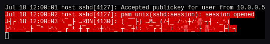

<!--
  secure-terminal: hostile-byte-stream comparison. AI-Assisted.
  Source: https://github.com/secure-terminal/secure-terminal.github.io
-->
<meta charset="utf-8">
<meta http-equiv="Content-Security-Policy" content="default-src 'none'; script-src 'self' 'unsafe-inline'; style-src 'self' 'unsafe-inline'; img-src 'self' data:; base-uri 'none'; form-action 'none'">
<meta name="viewport" content="width=device-width, initial-scale=1">
<meta name="ai-disclosure" content="ai-assisted">
<title>secure-terminal vs a normal terminal: hostile byte streams</title>
<meta name="description" content="Feed the same hostile byte stream to ten Debian terminal emulators and to secure-terminal. Every normal terminal is corrupted - garbled, stuck colours, a hijacked title; secure-terminal is not. Measured, with screenshots.">
<link rel="canonical" href="https://secure-terminal.github.io/comparison/">
<meta name="robots" content="index, follow">
<meta property="og:type" content="website">
<meta property="og:site_name" content="secure-terminal">
<meta property="og:title" content="secure-terminal vs a normal terminal: hostile byte streams">
<meta property="og:description" content="The same hostile stream fed to ten emulators and to secure-terminal, with screenshots. Every normal terminal is corrupted; secure-terminal is not.">
<meta property="og:url" content="https://secure-terminal.github.io/comparison/">
<meta property="og:image" content="https://secure-terminal.github.io/og.png">
<meta property="og:image:width" content="1200">
<meta property="og:image:height" content="630">
<meta property="og:image:alt" content="secure-terminal hostile-byte-stream comparison">
<meta name="twitter:card" content="summary_large_image">
<meta name="twitter:title" content="secure-terminal vs a normal terminal: hostile byte streams">
<meta name="twitter:image" content="https://secure-terminal.github.io/og.png">
<meta name="theme-color" content="#f3f2ee">
<link rel="icon" href="/favicon.svg" type="image/svg+xml">
<link rel="stylesheet" href="/style.css">

<header class="nav">
  <div class="wrap">
    <a class="brand" href="/"></a>
    <span class="status" title="This site is AI-generated and pending human review">needs human review</span>
    <nav>
      <a href="/#compare">Compare</a>
      <a href="/#features">Features</a>
      <a href="/#install">Install</a>
      <a href="/plugins/">Plugins</a>
      <a href="/compatibility/">Compatibility</a>
      <a href="/comparison/" class="active">Comparison</a>
      <a href="https://github.com/secure-terminal/secure-terminal">GitHub</a>
    </nav>
  </div>
</header>

<main>
<section class="hero"><div class="wrap">
  <p class="eyebrow">HOSTILE BYTE STREAMS: THE DIFFERENCE, MEASURED</p>
  <h1>Pipe garbage at a terminal.<br>Only one shrugs it off.</h1>
  <p class="lede">Untrusted bytes - random data, a program's output, a hostile log - are
    interpreted as escape sequences by a normal terminal, so they garble the screen, stick it
    in the wrong colours or character set, and can silently rewrite your window or tab title to
    attacker-chosen text. A <code>reset</code> clears the visible mess, but usually not the
    hijacked title. secure-terminal shows the identical bytes as inert plain ASCII: no colours,
    no charset tricks, no title change, no clipboard write - nothing to clean up.</p>
</div></section>

<section class="cat" id="method"><div class="wrap">
  <h2 class="catname">What we fed them</h2>
  <p class="catdesc">One payload, two honest cases, fed to ten Debian terminal emulators and to
    secure-terminal, each on its own isolated headless display. Tested <b>2026-07-18</b>.</p>
  <div class="issue">
    <p><b>Case A - <code>cat /dev/random</code>:</b> 20,000 raw random bytes
      (<code>head -c 20000 /dev/urandom</code>), with no crafted escapes. Whatever happens is
      genuinely what random data does - no chosen title string is possible.</p>
    <p><b>Case B - a crafted hostile log:</b> an <code>OSC 0</code> title-set to an
      illustrative marker (<code>root@prod-db:~#</code>), a stuck colour that is never reset, and
      a DEC line-drawing charset shift that is never reset. This is the deliberate attack a log
      file or program output can carry.</p>
  </div>
</div></section>

<section class="cat" id="results"><div class="wrap">
  <h2 class="catname">What happened</h2>
  <div class="cmp-wrap">
  <table class="cmp">
    <thead><tr><th>Terminal</th><th>Case A (<code>/dev/random</code>)</th><th>Case B (crafted log)</th><th>Cleared by <code>reset</code>?</th></tr></thead>
    <tbody>
      <tr><td><a href="https://packages.debian.org/xterm" rel="noopener">xterm</a>, <a href="https://packages.debian.org/rxvt-unicode" rel="noopener">urxvt</a>, <a href="https://packages.debian.org/stterm" rel="noopener">st</a></td><td>Screen garbled, stuck reverse-video. (st: random bytes hit an OSC and garbled the <em>title</em> to random - random, not chosen.)</td><td>Stuck red + line-drawing; <b>title hijacked</b> to <code>root@prod-db:~#</code>.</td><td>Screen yes; the title only on st.</td></tr>
      <tr><td><a href="https://packages.debian.org/xfce4-terminal" rel="noopener">xfce4-terminal</a>, <a href="https://packages.debian.org/mate-terminal" rel="noopener">mate-terminal</a>, <a href="https://packages.debian.org/lxterminal" rel="noopener">lxterminal</a> (VTE)</td><td>Garbled.</td><td>Stuck colour + charset; <b>title hijacked</b>.</td><td>Screen yes; title no.</td></tr>
      <tr><td><a href="https://packages.debian.org/konsole" rel="noopener">konsole</a> (KDE)</td><td>Garbled, selection artifacts.</td><td>Stuck colour + <b>charset stuck</b>. (Default profile does not surface the program-set title - it still stored it.)</td><td>Screen yes.</td></tr>
      <tr><td><a href="https://packages.debian.org/qterminal" rel="noopener">qterminal</a> (LXQt)</td><td>Garbled.</td><td>Stuck colour + charset; <b>title hijacked</b>, shown in the tab.</td><td>Screen yes; title no.</td></tr>
      <tr><td><a href="https://packages.debian.org/alacritty" rel="noopener">alacritty</a>, <a href="https://packages.debian.org/kitty" rel="noopener">kitty</a> (modern, GPU)</td><td>Garbled (kitty: replacement glyphs).</td><td>Stuck colour + charset; <b>title hijacked</b> - no more resilient than xterm.</td><td>Screen yes; title no.</td></tr>
      <tr><td><b>secure-terminal</b></td><td><span class="yes">Nothing.</span> 20,000 random bytes shown as inert ASCII (non-printable neutralised); no colour or charset change.</td><td><span class="yes">Nothing.</span> The crafted log renders as plain text; no colour, no charset, <b>no title change</b>, no clipboard write.</td><td>Never breaks - nothing to clear.</td></tr>
    </tbody>
  </table>
  </div>
  <p class="catdesc" style="margin-top:12px">Every traditional emulator was corrupted - all ten
    garbled with stuck colours in Case B, a stuck charset on two, an attacker-controlled title on
    nine of ten (only konsole's default profile did not surface it, and it still stored the value
    and still corrupted the screen). <b>Modern GPU terminals are not exempt.</b> The visible
    garble clears with <code>reset</code>, but the silent title change usually does not, and only
    if you notice and type <code>reset</code> at a screen that may be unusable. Nothing crashed
    or hung; the danger is the silent title hijack and the clipboard write, not instability.</p>
</div></section>

<section class="cat" id="shots"><div class="wrap">
  <h2 class="catname">The screenshots</h2>
  <p class="catdesc">Captured headless in an isolated sandbox on 2026-07-18. The crafted marker is
    <code>root@prod-db:~#</code> (illustrative - a real attacker picks their own); the random
    case carries no chosen string.</p>
  <div class="shotgrid">
    <figure class="shot"><figcaption><b>secure-terminal, crafted log.</b> Neutralised: plain text, no colour, no charset, title untouched.</figcaption></figure>
    <figure class="shot"><figcaption><b>xterm, crafted log.</b> Stuck red + line-drawing charset; title hijacked to <code>root@prod-db:~#</code>.</figcaption></figure>
    <figure class="shot"><figcaption><b>qterminal, crafted log.</b> The hijacked title is visible in the tab.</figcaption></figure>
    <figure class="shot"><figcaption><b>kitty (modern, GPU), crafted log.</b> Hijacked like the rest - modern is not immune.</figcaption></figure>
    <figure class="shot"><figcaption><b>secure-terminal, <code>/dev/random</code>.</b> 20,000 random bytes as inert ASCII; title stays put.</figcaption></figure>
    <figure class="shot"><figcaption><b>xterm, <code>/dev/random</code>.</b> Garbled, stuck reverse-video - genuine random corruption, not a chosen string.</figcaption></figure>
  </div>
  <p class="catdesc" style="margin-top:12px">The six above are a representative selection. The
    <b>full set</b> - all ten emulators plus secure-terminal, each in both cases and (where it
    breaks) after <code>reset</code> - was captured in the same run and is published in full
    below, alongside the raw window-title log so every claim in the table can be checked.</p>
</div></section>

<section class="cat" id="fullset"><div class="wrap">
  <h2 class="catname">The complete set</h2>
  <p class="catdesc">Every emulator, both payloads, and the after-<code>reset</code> state, exactly
    as captured on 2026-07-18. The window-title behaviour that backs the table is in the raw log:
    <a href="shots/titles-combined.txt" rel="noopener">titles-combined.txt</a>.</p>
  <div class="shotgrid">
    <figure class="shot"><figcaption><b>secure-terminal</b> - crafted log</figcaption></figure>
    <figure class="shot"><figcaption><b>secure-terminal</b> - /dev/random</figcaption></figure>
    <figure class="shot"><figcaption><b>xterm</b> - crafted / <a href="shots/xterm.random.png">random</a> / <a href="shots/xterm.recovered.png">recovered</a></figcaption></figure>
    <figure class="shot"><figcaption><b>urxvt</b> - crafted / <a href="shots/urxvt.random.png">random</a> / <a href="shots/urxvt.recovered.png">recovered</a></figcaption></figure>
    <figure class="shot"><figcaption><b>st</b> - crafted / <a href="shots/stterm.random.png">random</a> / <a href="shots/stterm.recovered.png">recovered</a></figcaption></figure>
    <figure class="shot"><figcaption><b>konsole</b> - crafted / <a href="shots/konsole.random.png">random</a> / <a href="shots/konsole.recovered.png">recovered</a></figcaption></figure>
    <figure class="shot"><figcaption><b>xfce4-terminal</b> - crafted / <a href="shots/xfce4-terminal.random.png">random</a> / <a href="shots/xfce4-terminal.recovered.png">recovered</a></figcaption></figure>
    <figure class="shot"><figcaption><b>mate-terminal</b> - crafted / <a href="shots/mate-terminal.random.png">random</a> / <a href="shots/mate-terminal.recovered.png">recovered</a></figcaption></figure>
    <figure class="shot"><figcaption><b>lxterminal</b> - crafted / <a href="shots/lxterminal.random.png">random</a> / <a href="shots/lxterminal.recovered.png">recovered</a></figcaption></figure>
    <figure class="shot"><figcaption><b>qterminal</b> - crafted / <a href="shots/qterminal.random.png">random</a> / <a href="shots/qterminal.recovered.png">recovered</a></figcaption></figure>
    <figure class="shot"><figcaption><b>alacritty</b> - crafted / <a href="shots/alacritty.random.png">random</a> / <a href="shots/alacritty.recovered.png">recovered</a></figcaption></figure>
    <figure class="shot"><figcaption><b>kitty</b> - crafted / <a href="shots/kitty.random.png">random</a> / <a href="shots/kitty.recovered.png">recovered</a></figcaption></figure>
  </div>
</div></section>

<section class="cat" id="why"><div class="wrap">
  <h2 class="catname">Why secure-terminal is different</h2>
  <div class="issue">
    <p>A normal terminal <em>interprets</em> program output as commands - move the cursor, set the
      title, change the palette, shift the charset, write the clipboard. secure-terminal's default
      CLI mode interprets none of it: output is reduced to printable ASCII (plus safe,
      contrast-guarded colour), so a hostile stream has nothing to act on. See the
      <a href="/compatibility/">compatibility page</a> for exactly which sequences are neutralised,
      and the <a href="https://github.com/secure-terminal/terminal-poc-corpus" rel="noopener">terminal-poc-corpus</a>
      for the automated proofs.</p>
  </div>
  <div class="cta">
    <a class="btn primary" href="/#install">Install secure-terminal</a>
    <a class="btn ghost" href="/compatibility/">See the full compatibility detail</a>
  </div>
</div></section>
</main>
<footer>
  <div class="ftop">
    <div class="fbrand">
      <span class="ftag"></span>
      <p>Paste in, read out. Nothing hides.</p>
    </div>
    <nav class="fcols">
      <div class="fcol">
        <h4>Project</h4>
        <a href="https://github.com/secure-terminal">Organisation</a>
        <a href="https://github.com/secure-terminal/secure-terminal.github.io">This page</a>
      </div>
      <div class="fcol">
        <h4>Family</h4>
        <a href="https://output-lies.github.io">output lies</a>
        <a class="self" href="https://secure-terminal.github.io" aria-current="page">secure-terminal</a>
        <a href="https://org-ai-assisted.github.io">org-ai-assisted</a>
      </div>
      <div class="fcol">
        <h4>Safe text</h4>
        <a href="https://github.com/Kicksecure/helper-scripts">helper-scripts</a>
        <a href="https://www.kicksecure.com/wiki/Unicode-show">unicode-show</a>
      </div>
    </nav>
  </div>
  <div class="fshare">
    <span class="fshare-l">Share:</span>
    <a class="sh" data-net="x" rel="nofollow noopener">X</a>
    <a class="sh" data-net="facebook" rel="nofollow noopener">Facebook</a>
    <a class="sh" data-net="telegram" rel="nofollow noopener">Telegram</a>
    <a class="sh" data-net="reddit" rel="nofollow noopener">Reddit</a>
    <a class="sh" data-net="whatsapp" rel="nofollow noopener">WhatsApp</a>
    <a class="sh" data-net="linkedin" rel="nofollow noopener">LinkedIn</a>
    <a class="sh" data-net="hn" rel="nofollow noopener">Hacker News</a>
    <a class="sh" data-net="mastodon" href="#" rel="nofollow noopener">Mastodon</a>
    <a class="sh" data-net="email">Email</a>
    <button class="sh" data-net="copy" type="button">Copy link</button>
    <button class="sh" data-net="md" type="button">Copy as Markdown</button>
    <span class="sh-msg" aria-live="polite"></span>
  </div>
  <script>
    /* Local-only share links. No third-party script or resource is loaded; a
       target opens only when the user clicks it. */
    (function () {
      var u = encodeURIComponent(location.href), t = encodeURIComponent(document.title);
      var L = {
        x: 'https://twitter.com/intent/tweet?url=' + u + '&text=' + t,
        facebook: 'https://www.facebook.com/sharer/sharer.php?u=' + u,
        telegram: 'https://t.me/share/url?url=' + u + '&text=' + t,
        reddit: 'https://www.reddit.com/submit?url=' + u + '&title=' + t,
        whatsapp: 'https://api.whatsapp.com/send?text=' + t + '%20' + u,
        linkedin: 'https://www.linkedin.com/sharing/share-offsite/?url=' + u,
        hn: 'https://news.ycombinator.com/submitlink?u=' + u + '&t=' + t,
        email: 'mailto:?subject=' + t + '&body=' + u
      };
      document.querySelectorAll('.fshare a.sh').forEach(function (a) {
        var n = a.getAttribute('data-net');
        if (L[n]) { a.href = L[n]; if (n !== 'email') { a.target = '_blank'; } }
      });
      var m = document.querySelector('.fshare [data-net=mastodon]');
      if (m) m.addEventListener('click', function (e) {
        e.preventDefault();
        var i = prompt('Your Mastodon instance (e.g. mastodon.social):');
        if (i) { i = i.replace('https://', '').replace('http://', '').replace(/\/+$/, '');
          window.open('https://' + i + '/share?text=' + t + '%20' + u, '_blank', 'noopener'); }
      });
      var msg = document.querySelector('.fshare .sh-msg');
      function flash(x) { if (msg) { msg.textContent = x; setTimeout(function () { msg.textContent = ''; }, 2000); } }
      var c = document.querySelector('.fshare [data-net=copy]');
      if (c) c.addEventListener('click', function () {
        if (navigator.clipboard) navigator.clipboard.writeText(location.href).then(function () { flash('link copied'); });
      });
      var md = document.querySelector('.fshare [data-net=md]');
      if (md) md.addEventListener('click', function () {
        var text = '[' + document.title + '](' + location.href + ')';
        if (navigator.clipboard) navigator.clipboard.writeText(text).then(function () { flash('markdown copied'); });
      });
    })();
  </script>
  <div class="ffree">
    <a class="freebadge" href="https://opensource.org/" rel="noopener" title="Open Source Initiative"><span>Open Source</span></a>
    <a class="freebadge" href="https://www.gnu.org/" rel="noopener" title="GNU / Free Software"><span>Freedom Software</span></a>
    <a class="freebadge" href="https://github.com/secure-terminal/secure-terminal.github.io/blob/master/LICENSE" rel="license">Licensed AGPL-3+</a>
  </div>
  <div class="fbot">
    <span class="fcopy">&copy; 2026 <a href="https://www.encrypted-support.com">ENCRYPTED SUPPORT LLC</a></span>
    <span class="fcopy">Operated by <a href="https://github.com/adrelanos">@adrelanos</a></span>
    <span class="fcopy sp"><a href="https://org-ai-assisted.github.io">Built with AI assistance</a></span>
  </div>
</footer>
